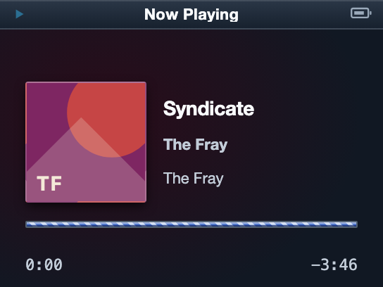
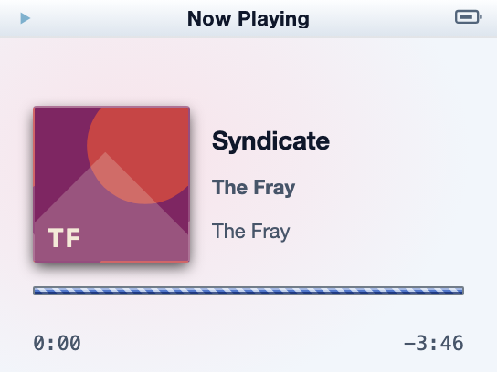

<!doctype html>
<meta charset="utf-8">
<title>Aqua loading material — equal-height comparison</title>
<style>
  * { box-sizing: border-box; }
  body { margin: 0; padding: 20px; background: #e7eaee; color: #1f2937; font: 600 14px/1.2 Helvetica, Arial, sans-serif; }
  h1 { margin: 0 0 14px; font-size: 18px; }
  .board { display: grid; gap: 12px; width: 520px; }
  figure { margin: 0; padding: 10px 20px 14px; background: #fff; border: 1px solid #b7bec7; }
  figcaption { margin-bottom: 8px; }
  .crop { position: relative; width: 480px; height: 48px; overflow: hidden; background: #d5dae0; }
  img { position: absolute; max-width: none; transform-origin: left top; }
  .reference img { transform: translate(-1280px, -267.43px) scale(2.285714); }
  .rejected img { transform: translate(-908px, -376px) scale(2); }
  .remake img { transform: translate(-1065.6px, -1507.2px) scale(4.8); }
</style>
<main class="board">
  <h1>Aqua loading bar — equal 48px bar-height comparison</h1>
  <figure><figcaption>Primary Aqua reference</figcaption><div class="crop reference"></div></figure>
  <figure><figcaption>Rejected cyan capsule</figcaption><div class="crop rejected"></div></figure>
  <figure><figcaption>Remake — dark panel</figcaption><div class="crop remake"></div></figure>
  <figure><figcaption>Remake — light panel</figcaption><div class="crop remake"></div></figure>
</main>
